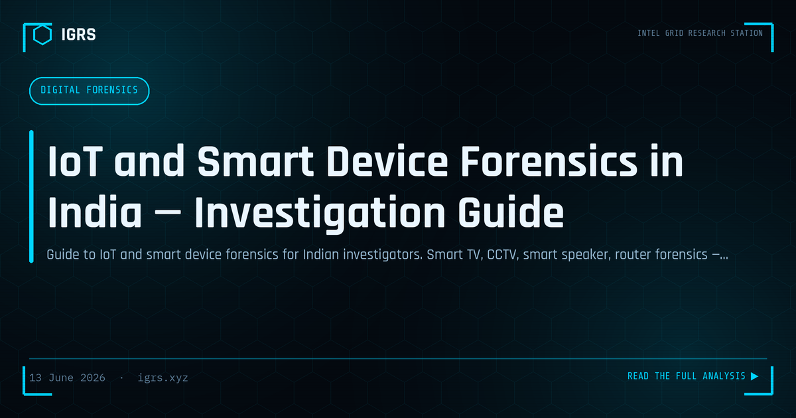

IoT and Smart Device Forensics in India — Investigation Guide
IoT Forensics: The New Evidence Frontier
The Internet of Things has transformed digital forensics in India. Smart TVs, CCTV cameras, smart speakers, home routers, wearables, and connected vehicles now generate evidence that proves crucial in investigations — establishing alibis, reconstructing timelines, and even capturing crimes directly. This guide covers the methodology for IoT and smart device forensics in the Indian context, from on-device data to cloud extraction.
IoT Evidence Sources
| Device | Evidence Available |
|---|---|
| Home routers | DHCP logs, DNS queries, connected device history |
| CCTV / IP cameras | Video, access logs, metadata |
| Smart speakers | Voice command history, account data |
| Smart TVs | Viewing history, app usage, credentials |
| Wearables | Location, activity, health metrics |
| Smart meters | Occupancy patterns via usage |
Router Forensics
Home routers are frequently overlooked yet contain valuable evidence:
- DHCP leases — which device held which IP and when
- DNS query logs — websites visited by all connected devices
- Connection logs — device connect/disconnect timing
- Port forwarding rules — evidence of servers or tunnelling
Critically, most consumer routers log only to volatile memory — power loss destroys the logs. In time-sensitive cases, the router should be prioritised and its data captured before any power interruption.
CCTV and IP Camera Forensics
CCTV evidence requires careful handling to preserve integrity:
- Maintain power to the DVR/NVR — do not switch off
- Image the storage using a write blocker before viewing
- Extract access logs and remote-login history
- Verify video authenticity by hashing the recording
- Check for tampering indicators in the access records
Remote-access logs on IP cameras can reveal whether footage was viewed or deleted by an intruder — itself significant evidence.
Smart Speaker and Voice Assistant Data
Smart speakers like Alexa and Google Home retain voice command history and associated account data in the cloud. This data can establish presence and activity at specific times. Access requires legal process to the provider — Amazon and Google both have law enforcement portals that accept Indian legal requests under Section 94 BNSS for account and command data.
Cloud-Stored IoT Data
| Ecosystem | Legal Process |
|---|---|
| Google (Nest, Android) | Google LERS portal |
| Amazon (Alexa, Ring) | Amazon law enforcement process |
| Apple (HomeKit) | Apple legal process |
| Chinese vendors (Hikvision, etc.) | Often require MLAT |
Most modern IoT devices sync to the cloud, meaning even if the local device is unavailable, evidence may exist in the provider's records — accessible through proper legal process.
Wearables and Fitness Trackers
Wearables record location history, activity levels, heart rate, and sleep patterns with timestamps. This data can establish a person's movements and physical state at specific times, sometimes corroborating or contradicting alibis. The data resides both on the paired phone and in the cloud, accessible through device extraction or provider legal process.
Legal Framework for IoT Forensics
IoT device seizure follows standard Section 94 BNSS procedure. Cloud data requires a Section 94 notice to the Indian office or MLAT for overseas servers. All evidence must carry a Section 63 BSA 2023 certificate and hash verification. The fragmented, multi-location nature of IoT data — split between device, phone, and cloud across possibly multiple jurisdictions — makes documentation and chain of custody especially important.
Challenges in IoT Forensics
IoT forensics faces distinct challenges: proprietary formats and encryption, volatile on-device storage, data spread across device and cloud, jurisdictional complexity for foreign providers, and the sheer diversity of devices and ecosystems. No single tool covers all IoT devices, requiring investigators to adapt techniques to each device type and ecosystem.
Building IoT Forensics Capability
As Indian homes and businesses fill with connected devices, IoT forensics is becoming indispensable. Developing capability requires understanding each ecosystem's data model, knowing the legal process for cloud providers, mastering preservation techniques that account for volatile storage, and maintaining rigorous documentation across the fragmented evidence landscape. The investigators who master IoT forensics unlock a rich and growing source of evidence that traditional device forensics alone cannot reach.